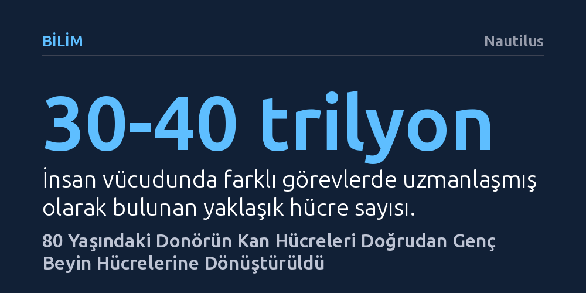

BILIM · Nautilus · 2026-10-13
Alman araştırmacılar, 80 yaşındaki bir donörün kan hücrelerini embriyonik ara aşamaya gerek kalmadan epigenetik yaşı 20'nin altında olan genç beyin hücrelerine dönüştürdü. Geliştirilen bu doğrudan yöntemle hücrelerin moleküler olarak gençleştiği ve genç hücreler gibi davrandığı saptandı.
Hücresel yaşlanmayı tersine çevirmek için hücrelerin önce embriyonik kök hücreye dönüştürülmesinin zorunlu olmadığını, yaşlı dokuların doğrudan genç hücrelere evrilebileceğini gösteriyor.

İnsan yaşamı iki hücrenin birleşmesiyle başlar ve bu hücreler katlanarak çoğalıp vücuttaki 30 ila 40 trilyon hücrelik devasa yapıyı meydana getirir. Bu gelişim sürecinde her hücre kas, sinir veya kan hücresi gibi belirli bir görevi üstlenerek uzmanlaşır. Hücre biyolojisinde farklılaşma olarak adlandırılan bu yolculuk, uzun yıllar boyunca geri dönüşü olmayan kesin bir süreç olarak kabul edilmiştir; uzmanlaşmış bir hücrenin kimliğine kilitlendiği varsayılırdı.
Almanya'daki Bonn Üniversitesi öncülüğünde yürütülen yeni bir araştırma, bu yerleşik biyolojik kabulü sarsan çarpıcı bir bulgu ortaya koydu. Sinirbilimciler, 80 yaşındaki bir donörden alınan kan öncül hücrelerini doğrudan genç sinir kök hücrelerine dönüştürmeyi başardı. Yapılan moleküler ölçümler, elde edilen yeni beyin hücrelerinin epigenetik yaşının 20'nin altında olduğunu ve hücrelerin hücresel düzeyde belirgin bir gençleşme yaşadığını gösterdi.
Geleneksel hücresel yeniden programlama tekniklerinde, belirli transkripsiyon faktörlerinden oluşan kimyasal bir kokteyl kullanılır. Bu yöntem, uzmanlaşmış hücrelerin kimliğini geriye sararak onları vücuttaki hemen her dokuya dönüşebilen pluripotent kök hücrelere dönüştürür. Söz konusu süreç hücrelerin epigenetik saatini sıfırlasa da hücreleri önce embriyonik benzeri bir kök hücre durumuna getirmek, hem zaman alan hem de kontrolsüz hücre çoğalması gibi riskler barındıran karmaşık bir ara aşamadır.
*Aging Cell* dergisinde yayımlanan çalışmanın getirdiği asıl yenilik, bu pluripotent ara basamağın tamamen atlanabilmiş olmasıdır. Araştırmacılar, kan öncül hücrelerini embriyonik benzeri kök hücre evresine sokmadan doğrudan beyin kök hücrelerine yönlendirmeyi başardılar. Üstelik bu kestirme dönüşüm sırasında, hücrelerin gençleşmiş moleküler yapısı hiçbir kayba uğramadan korundu.
Hücrelerin yalnızca moleküler testlerde genç görünmesi, pratikte genç bir doku gibi işlev göreceklerini garanti etmez. Bu nedenle araştırmacılar, dönüştürülen hücrelerin davranışlarını yakından inceledi. Sonuçlar, hücrelerin sadece epigenetik saat açısından değil, biyolojik davranış olarak da genç beyin hücreleri gibi hareket ettiğini doğruladı. Araştırmanın yazarlarından Oliver Brüstle, “Bu epigenetik gençleşmenin, hücrelerin gerçekten de genç hücreler gibi davranmasını sağladığını da biliyoruz,” sözleriyle keşfin pratik değerini vurguluyor.
Seksen yaşındaki dokulardan yirmi yaşın altındaki işlevsel beyin hücrelerinin üretilebilmesi, yaşlanmaya bağlı nörodejeneratif hastalıkların tedavisinde yeni bir dönemin kapısını aralayabilir. Pluripotent ara basamağın devreden çıkarılması, laboratuvar ortamında genç doku üretimini hem çok daha güvenli hem de hızlı hale getirerek rejeneratif tıp araştırmalarına güçlü bir zemin hazırlıyor.